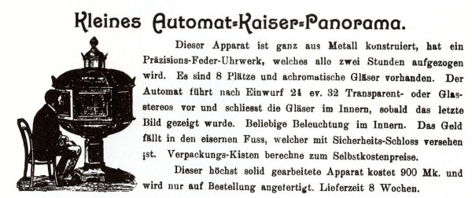

Welcome

Studies in Literary Themes and Motifs:
Of Media and Mimesis,
the Digital and Diegetic
Course Description:
Jonathan Abel
EMAIL professor.abel@psu.edu
OFFICE HOURS
T-Th 9-11 or by appointment
OFFICE LOCATION
Burrowes 427
COURSE MEETING
R 6:00 PM - 9:00 PM
Location:
430 Burrowes Bldg
231127 001
Credits: Variable 3.0 -6.0
Can new media can be made legible through older mechanisms of reading? What do literature and literary readings have to offer to new media? What does new media have to offer studies of literature?
In literary studies, the rise of cultural materialism and new historicism has oddly undergirded the more recent ascent of “the digital humanities”; yet what has been left behind in these epistemic shifts are questions of literariness and pleasure. If context and form have provided the grist for recent scholarship, this seminar proposes not a simple return to text and content, but a thorough rethinking of what constitutes these stubborn distinctions.
Though it is said that new media threatens to quash both old media (books, telegraphs, film, and faxes) and cultural diversity through speedy or instant worldwide delivery, there are ways in which new media preserves and continues longstanding cultural divides. Much of the attention to electronic literature (both narrative and lyrical) has been limited to texts that are written originally in English. And yet literature carried in such recent forms as hypertext, flash, twitter, video games, and cell phone screens has been global from the start. This seminar will provide an overview of existing scholarship on electronic literatures while emphasizing global and transhistorical continuities and divergences.
This seminar will examine a long history and broad geography of new media in order to reconnect today’s media with those of other times and to recall that even the same technology will be employed in vastly differing ways depending often on cultural and linguistic difference. Areas, linguistic cultures, and media covered in the syllabus will be determined through consultation with the expertise of seminar participants. Readings may include theoretical work by Aarseth, Benjamin, Barthes, Freud, Gitelman, Hayles, Luhmann, Marx, Manovich, McGann, McLuhan, Schopenhauer, Ryan, and Weber.